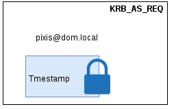
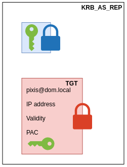

Kerberos协议详解
Kerberos协议详解
介绍
最近工作中经常用到Kerberos认证，虽然一些软件已经实现了Kerberos认证，配置一下就能使用，但是我一直不是很清楚它的具体流程，下面通过分析它的协议(Kerberos V5)进一步加深对Kerberos认证的了解。
角色
Kerberos是一种第三方认证协议，通过使用对称加密技术为客户端/服务器应用程序提供强身份验证。在希腊神话中Kerberos是守护地狱之门的一条三头神犬，而这三个头分别代表着协议的三个角色，如下图所示它们分别是：
-
访问服务的Client
-
提供服务的Server
-
KDC，密钥分发中心，该中心里又包含以下两个服务：
AS，身份验证服务
TGS，票据授权服务
流程
Kerberos认证主要通过三个子协议来完成，它们分别为：
- Authentication Service Exchange，身份认证服务交换，是Client与AS之间交互，包含KRB_AS_REQ和KRB_AS_REP两个包。
- Ticket-Granting Service (TGS) Exchange，票据授权服务交换，是Client与TGS之间交互，包含KRB_TGS_REQ和KRB_TGS_REP两个包。
- Client/Server Authentication Exchange，客户端/服务认证交换，是Client与Server之间交互，包含KRB_AP_REQ和KRB_AP_REP两个包。
具体流程如下图所示：
下面以用户pixis去访问CIFS服务为例来详细讲解一下这3个交换的过程。
身份认证服务交换
首先当用户在Client输入用户名和密码时，Client将用户密码的hash值作为加密密钥，对时间戳进行加密，同时附上明文的用户名发送给AS，KRB_AS_REQ包的格式如下所示：

AS收到KRB_AS_REQ后会通过用户名查找该用户对应密码的hash值，然后去解时间戳，还要对时间戳的有效性进行验证，时间戳不能和AS的时间相差太大，否则就说明两边时间不同步或者是一个重放的请求，AS会直接拒绝该请求，Kerberos认证强依赖于时钟同步，接下来还会看到它的用处。通过这一步AS就完成了对Client的验证以及时钟同步的验证。
AS会创建一个连接Client和TGS的会话key(Client/TGS Session Key，绿色的钥匙)以及TGT(Ticket Granting Ticket)，TGT中包含用户信息，时间戳，超时时间以及Client/TGS Session Key。AS将TGT用TGS密码的hash值加密(红锁)，将Client/TGS Session Key用该用户(pixis)密码的hash值加密(蓝锁)。然后AS将这两部分放到KRB_AS_REP中返回给Client。

Client收到AS的响应消息以后，利用自身用户(pixis)密码的hash值对KRB_AS_REP中的上半部分进行解密，这样可以获取到Client/TGS Session Key，Client/TGS Session Key是票据授权服务交换阶段需要用到的密钥，票据授权服务交换不再使用用户(pixis)密码的hash值作为密钥。但由于TGT是使用TGS密码的hash值加密的，所以Client无法对其解密。那么这里就有个疑问了，既然Client无法处理TGT，那AS为什么要把它发给Client呢？它到底是干什么用的呢？这个问题接下来再回答。
票据授权服务交换
Client使用Client/TGS Session Key对用户信息以及当前的时间戳进行加密生成Authenticator，然后再附上AS发送过来的TGT以及自己要申请访问的服务信息CIFS，生成KRB_TGS_REQ后发送给TGS。
TGS收到Client发送来的KRB_TGS_REQ后，其逻辑如下图所示：

-
TGS使用自己的密码对TGT进行解密，然后拿到TGT中的Client/TGS Session Key。
-
TGS使用Client/TGS Session Key解开Authenticator，拿到里面的用户名以及时间戳。
-
TGS根据前两步解析的信息对Client进行认证并授权。实际上TGS这一步要做甚多事情，下面我简单的列一些：
比较TGT中的用户名和Authenticator中的用户名是否一致
比较Authenticator中的时间戳和TGS系统时间的差值是否在一定范围内
TGS缓存最近一段时间内用户的认证时间，TGS要求Authenticator中的时间戳要晚于该用户最近一次认证的时间
比较包的源IP和TGT中的IP是否一致
验证pixis用户是否有访问CIFS的权限
通过上面TGS的处理逻辑可以看出，TGT实际上是给TGS用的，TGS需要对它进行解密并获取Client/TGS Session Key以及Client信息。有了Client/TGS Session Key，TGS才能用它解开KRB_TGS_REQ中的Authenticator信息，并对Client进行验证。也就是说在第一阶段AS认证完Client后本来应该把KRB_AS_REP拆成两部分，一部分Client/TGS Session Key发给Client，另一部分TGT发给TGS，但是AS没有这样做，而是把这两部分都发给了Client，这是为什么呢？首先网络传输有延时，AS没法保证TGS在收到KRB_TGS_REQ之前必须收到TGT，AS和TGS是两个独立的服务，除了AS里面存有TGS的密码外它们之间没有太多的联系，既然这样还不如让Client代为发送TGT。其次如果AS直接发送TGT给TGS，TGS势必要缓存TGT里面的信息，这就增加的TGS的复杂度。
验证通过后，TGS会创建一个连接Client和Server之间的会话key(Client/Server Session Key，紫色的钥匙)以及ST(Service Ticket)，ST中包含用户信息，Service信息以及Client/Server Session Key。TGS将ST用Server密码的hash值加密(黄锁)，将Client/Server Session Key用Client/TGS Session Key加密(绿锁)。然后TGS将这两部分放到KRB_TGS_REP中返回给Client。
有没有觉得KRB_TGS_REP和身份认证服务交换阶段的KRB_AS_REP很像，只不过Client/TGS Session Key变成了Client/Server Session Key，TGT变成了ST。
客户端/服务认证交换
接下来的逻辑就跟票据授权服务交换阶段很像了。Client使用Client/Server Session Key对用户信息以及当前的时间戳进行加密生成Authenticator，然后再附上TGS发送过来的ST，生成KRB_AP_REQ后发送给Server。
Server端的处理逻辑也跟票据授权服务交换阶段的TGS服务很像，这里就不赘述了，现在我们看看Server端返回什么。为了防止Server是个假的Server，Client要求Server将Authenticator字段中的Timestamp用Client/Server Session Key加密后发回来，通过上图我们知道，Server要想得到Client/Server Session Key，必须要有密码来解开ST才行，只有真的Server才有密码解开ST，而假的Server是拿不到Client/Server Session Key的。
Client收到KRB_AP_REP后用Client/Server Session Key对其解密，得到Timestamp后然后跟之前发送的Timestamp对比，信息一致就说明对端是真的Server，这样就完成了Client和Server间的双向认证。
TGS服务
看完上面的流程后总感觉有些麻烦，2，3和4，5干的事情很像，有点多余。Client访问完AS后直接得到Client/Server Session Key和TGS，然后Client拿着这些直接访问Server不香吗？就像下图这样：

总觉得Client/TGS Session Key和TGT是多余的，后来才明白Kerberos是要实现单点登录的，按上图的方案，Client访问每个服务都要输入一次用户名密码，当Kerberos管理的服务很多时这是无法接收的。另外Client/TGS Session Key是有过期时间的，即使被破解了也会因为过期而不带来太大的风险，如果一直使用用户的密码就不好说了，因为用户密码的更新时间是不确定的，如果经常用它来加密一些数据放在公网上传输，时间久了是不安全的。从上面的流程我们可以看出，Kerberos认证依赖于只有用户自己和AS知道用户的密码，如果有第三方知道了用户的密码整个认证就失效了。所以最好是一次登录，接下来的交互都使用Client/TGS Session Key和TGT。就像下图所示的一样：

总结
以上只是简要的概述了整个协议的流程，但实际的逻辑以及交互包的格式远比上面介绍的复杂，有兴趣的朋友可以去研究一下它的说明书rfc1510。
参考
https://tools.ietf.org/html/rfc1510
https://blog.csdn.net/wannuoge4766/article/details/106303372/